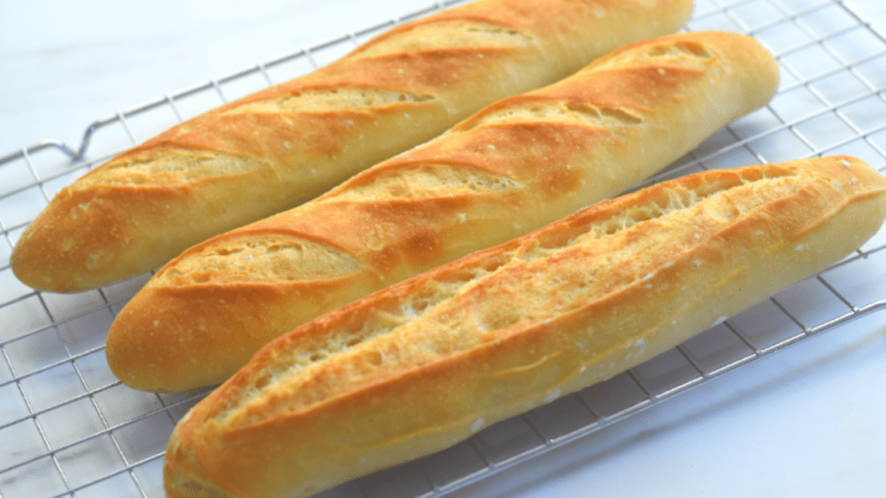

French Bread

Description
These baguettes are light and airy with a crusty exterior and a very soft and chewy interior.
While it’s a challenge to make “real” french bread / baguettes at home, this FRENCH BREAD RECIPE is probably as close to an artisan bakery version as you’re going to find.
Ingredients
- Flour: 700 g
- Salt: 2 Tsp
- Instant yeast: 1 and 1/2 Tsp
- Water: 530 ml
Steps
- In to a large bowl,add all the dry ingredients and give it a good whisk to make sure everything is well combined.
- Pour water and mix them together.Make sure there are no dry patches in the dough.
- Cover the dough with a plastic film and keep it in a warm environment for 2 hours or until the dough get doubled in size.
- Divide the dough into 5 equal parts
- Make round dough balls out of each by pulling the edges into the center.
- Cover with a damp cloth and let it rest for 45 minutes.
- Working with one piece at a time, flatten the dough slightly then fold it nearly (but not quite) in half, sealing the edges with the heel of your hand.
With the seam side down, cup your fingers and gently roll the dough into a log (size matching your pan).
- Place the logs seam-side down onto a lightly greased or parchment-lined sheet pan or pans; or into the folds of a heavily floured cotton dish towel (or couche). Cover them with lightly greased plastic wrapper a damp cloth, and allow the loaves to rise until they’re slightly puffy . The loaves should certainly look lighter and less dense than when you first shaped them, but won’t be anywhere near doubled in bulk. This should take about 45 minutes to an hour at room temperature (about 68°F).
- Towards the end of the rising time, preheat your oven to 450°F .
If your french bread/ baguettes have risen in a dish towel or couche, gently roll them (seam side down) onto a lightly greased (or parchment-lined) baking sheet on to a non stick baking tray. If you plan on baking them on a baking stone, roll them onto a piece of parchment, and lift the parchment onto a baker’s peel.
- Using a baker’s lame (a special curved blade) or a very sharp knife held at about a 45° angle, make three to five long lengthwise slashes in each baguette.
- Load the baguettes into the oven. If you’re baking on a stone, use a baker’s peel to transfer the french baguettes, parchment and all, onto the hot stone.
Carefully pour the boiling water into the cast iron pan, and quickly shut the oven door. The billowing steam created by the boiling water will help the baguettes rise, and give them a lovely, shiny crust.
Bake the baguettes — on the pan, or on a stone — for 24 to 28 minutes, or until they’re a very deep golden brown.
Remove them from the oven and cool them on a rack.